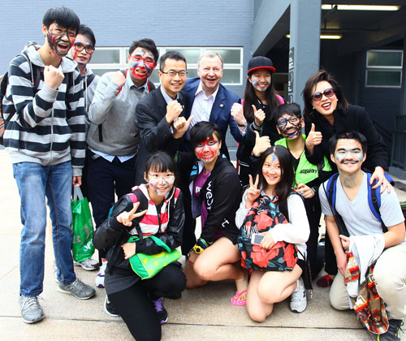
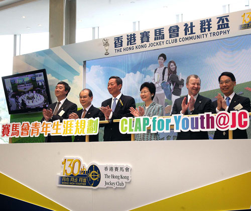

社區貢獻及慈善
青年人是社會未來的棟樑。多年來，馬會資助各類型青少年活動，亦主動開拓不同項目，向青年人灌輸正確的價值觀及處世態度。 其中，具前瞻性的「共創成長路」- 賽馬會青少年培育計劃，不僅獲納入本地課程，更經多個海外教育機構採用，贏得國際認可。由民政事務局舉辦、馬會資助的「青少年暑期活動」 (現改稱為「「青少年暑期活動」」)，自1969年推出以來，已陪伴數百萬名兒童及青少年度過充實而富意義的暑假。
馬會深信，培養新一代的創造力和可持續發展，是香港長遠發展的關鍵，馬會慈善信託基金致力促進青少年的身心發展，提供肥沃的發展土壤，激發其潛能，孕育他們積極參與社會事務的能力與熱誠。賽馬會「創不同」學院及「賽馬會鼓掌‧創你程計劃」等項目，以嶄新方式鼓勵青年人跳出框框，善用創新思維。其中，「賽馬會鼓掌‧創你程計劃」是全港首個結合跨界別力量，全面協助在學及非在學青少規劃前路的項目，旨在營造有利環境，提供多元出路，讓青少年探索及認清自己的興趣及抱負，踏出康莊大道。

